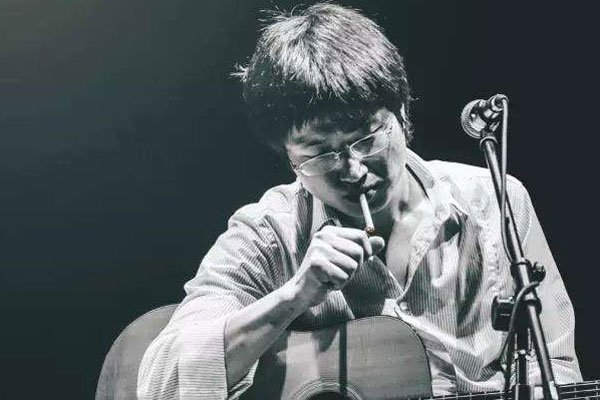
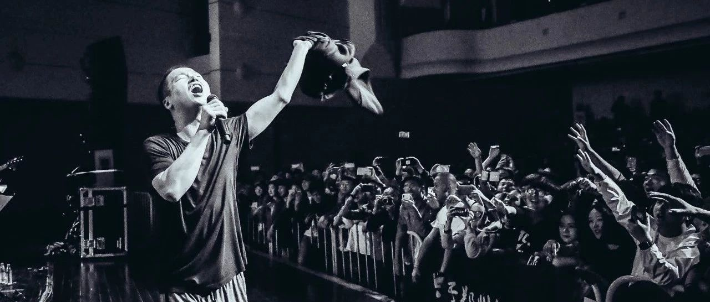

All About Li Zhi
Li Zhi is a singer from China Mainland. He was born in 1978 in Nanjing, China. Li's career as a singer is quite rough since he quit his college in Nanjing. He struggled his life with the lowest social group while porforming in the bars in Beijing. It was not until his 30s that he deside to release his first album "The Forbidden Game", even though he's been writing songs and creating music all time long. The album led to an uproar, but Li was not into fame and money. He thinks his music is free for the people struggling like he was before. So he start a movement against the entire show bussiness. He upload all his albums and MVs onto his official website and carry out the "free download, free bid" movement. Which enrage the entertainment companies. His official site is banned shortly after that.
In 2019 spring, while Li was on his "Three Three Four" tour around China, he was sued for "improper behavior" and get banned in China mianland. Many people(including me myself), think this is "nonsence and come from nowhere". Since then, Li was vanished from Chinese people's sight, which is a real pity. People wish that he will come back to stage one day. We really do...
Me and Li Zhi
The first Li Zhi song I heard is "Sky Castle". It is a really touching song telling the love story of Li himself. THe lyric is so catchy and touching which I just can't stoping repeating.
I really want to go to a Li Zhi live but it is not before he want banned thoroughly that I finally booked the ticket and decide to go to Sichuan for his concert. But unfortunatly, he was banned right after I booked the ticket. His concert is very touching. Li Zhi's voice is not very beautiful. But he has a really strong and talented team members who really matches Li's sound. So it is really a harmony at Li's consert.
My favorite song from Li Zhi is called "Will This World Be Better?", I'm gonna attach the music vedio below!
This is the Music Video of Li Zhi - "Will This World Be Better?"